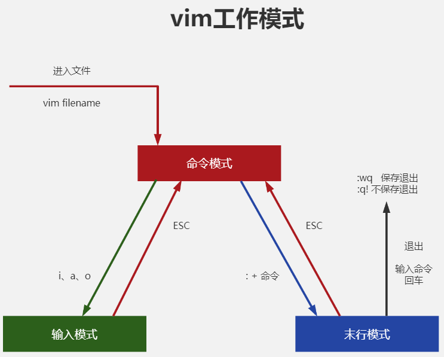
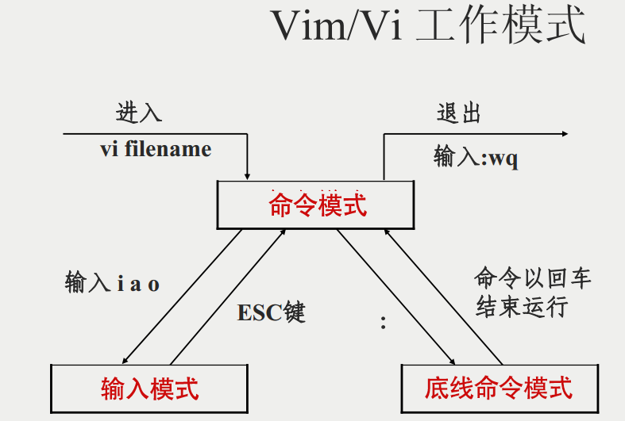
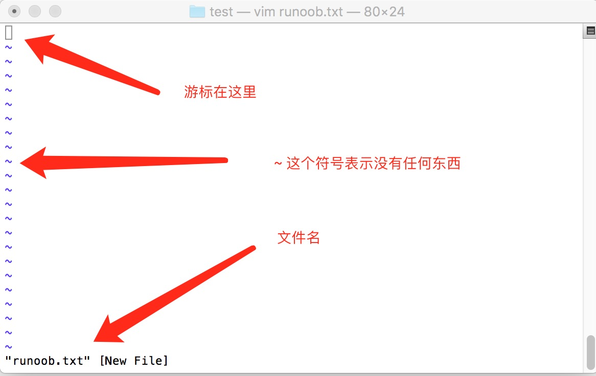
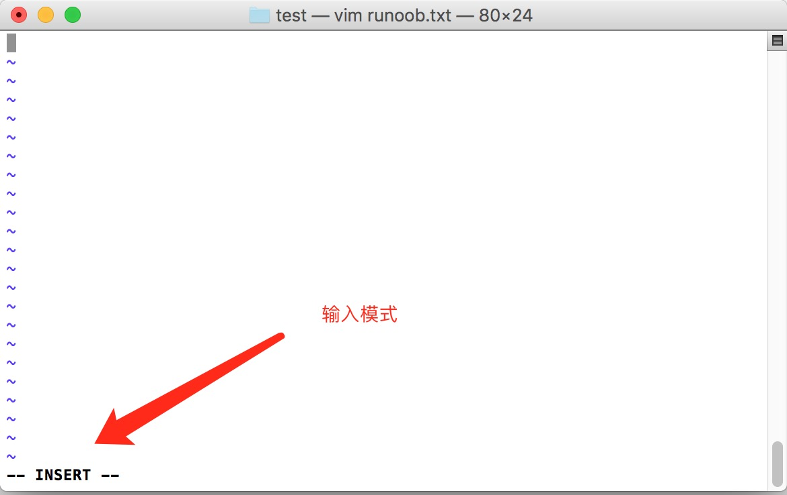
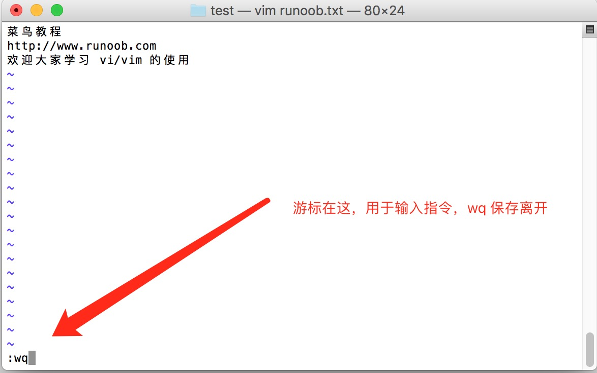

Vim
安装
Windows 安装
通过下载执行文件 安装 下载地址
下载后添加环境变量，即可使用 vim
MacOS
brew install vim
快速使用
Vim 的基本概念
Vim 是一种强大的文本编辑器，以其高效的编辑功能而著名。它有三种主要模式：
- 命令模式：这是默认模式，用于导航和执行命令。
- 插入模式：用于输入文本。
- 末行模式：用于执行复杂命令。

操作指令
在终端中输入 vim，然后回车。你会看到一个新的 Vim 窗口。
| 模式 | 类型 | 命令 | 说明 |
|---|---|---|---|
| 命令模式 | 移动光标 | h |
向左移动光标 |
j |
向下移动光标 | ||
k |
向上移动光标 | ||
l |
向右移动光标 | ||
| 删除文本 | x |
删除光标所在的字符 | |
dd |
删除整行 | ||
| 撤销和重做 | u |
撤销上一个操作 | |
Ctrl + r |
重做上一个操作 | ||
| 进入插入模式 | i |
在光标前插入，进入插入模式 | |
a |
在光标后插入，进入插入模式 | ||
o |
在当前行下方打开新行并插入，进入插入模式 | ||
| 进入末行模式 | : |
进入末行模式，并且底线输入里面显示 : |
|
| 插入模式 | 返回命令模式 | Esc |
返回命令模式。 插入模式下和普通的文本编辑一样，但是不能使用Ctr + z 等进行撤销，可退回到命令模式使用相关命令 |
| 末行模式 | 返回命令模式 | Esc |
返回命令模式，注意不是退出Vim |
| 保存文件 | :w |
按下 enter 键，保存当前更改并返回命令模式 |
|
| 另存为 | :w 文件名 |
按下 enter 键，另存为指定文件名，并返回命令模式 |
|
| 退出Vim | :q |
按下 enter 键，退出Vim，注意如果更改了会提示执行保存操作 |
|
| 强制退出Vim | :q! |
按下 enter 键，强制退出 |
|
| 保存并退出Vim | :wq |
按下 enter 键，保存并退出Vim 常用 |
什么是 vim？
Vim是从 vi 发展出来的一个文本编辑器。代码补完、编译及错误跳转等方便编程的功能特别丰富，在程序员中被广泛使用。
简单的来说， vi 是老式的字处理器，不过功能已经很齐全了，但是还是有可以进步的地方。 vim 则可以说是程序开发者的一项很好用的工具。
连 vim 的官方网站 (http://www.vim.org) 自己也说 vim 是一个程序开发工具而不是文字处理软件。
vim 键盘图：

vim 的使用
基本上 vi/vim 共分为三种模式，分别是命令模式（Command mode），输入模式（Insert mode）和底线命令模式（Last line mode）。 这三种模式的作用分别是：
命令模式：
用户刚刚启动 vi/vim，便进入了命令模式。
此状态下敲击键盘动作会被Vim识别为命令，而非输入字符。比如我们此时按下i，并不会输入一个字符，i被当作了一个命令。
以下是常用的几个命令：
- i 切换到输入模式，以输入字符。
- x 删除当前光标所在处的字符。
- : 切换到底线命令模式，以在最底一行输入命令。
若想要编辑文本：启动Vim，进入了命令模式，按下i，切换到输入模式。
命令模式只有一些最基本的命令，因此仍要依靠底线命令模式输入更多命令。
输入模式
在命令模式下按下i就进入了输入模式。
在输入模式中，可以使用以下按键：
- 字符按键以及Shift组合，输入字符
- ENTER，回车键，换行
- BACK SPACE，退格键，删除光标前一个字符
- DEL，删除键，删除光标后一个字符
- 方向键，在文本中移动光标
- HOME/END，移动光标到行首/行尾
- Page Up/Page Down，上/下翻页
- Insert，切换光标为输入/替换模式，光标将变成竖线/下划线
- ESC，退出输入模式，切换到命令模式
底线命令模式
在命令模式下按下:（英文冒号）就进入了底线命令模式。
底线命令模式可以输入单个或多个字符的命令，可用的命令非常多。
在底线命令模式中，基本的命令有（已经省略了冒号）：
- q 退出程序
- w 保存文件
按ESC键可随时退出底线命令模式。
简单的说，我们可以将这三个模式想成底下的图标来表示：

vim 使用实例
使用 vi/vim 进入一般模式
如果你想要使用 vi 来建立一个名为 runoob.txt 的文件时，你可以这样做：
vim runoob.txt
直接输入 vi 文件名 就能够进入 vi 的一般模式了。请注意，记得 vi 后面一定要加文件名，不管该文件存在与否！

按下 i 进入输入模式(也称为编辑模式)，开始编辑文字
在一般模式之中，只要按下 i, o, a 等字符就可以进入输入模式了！
在编辑模式当中，你可以发现在左下角状态栏中会出现 –INSERT- 的字样，那就是可以输入任意字符的提示。
这个时候，键盘上除了 Esc 这个按键之外，其他的按键都可以视作为一般的输入按钮了，所以你可以进行任何的编辑。

按下 ESC 按钮回到一般模式
好了，假设我已经按照上面的样式给他编辑完毕了，那么应该要如何退出呢？是的！没错！就是给他按下 Esc 这个按钮即可！马上你就会发现画面左下角的 – INSERT – 不见了！
在一般模式中按下 :wq 储存后离开 vi
OK，我们要存档了，存盘并离开的指令很简单，输入 :wq 即可保存离开！

OK! 这样我们就成功创建了一个 runoob.txt 的文件。